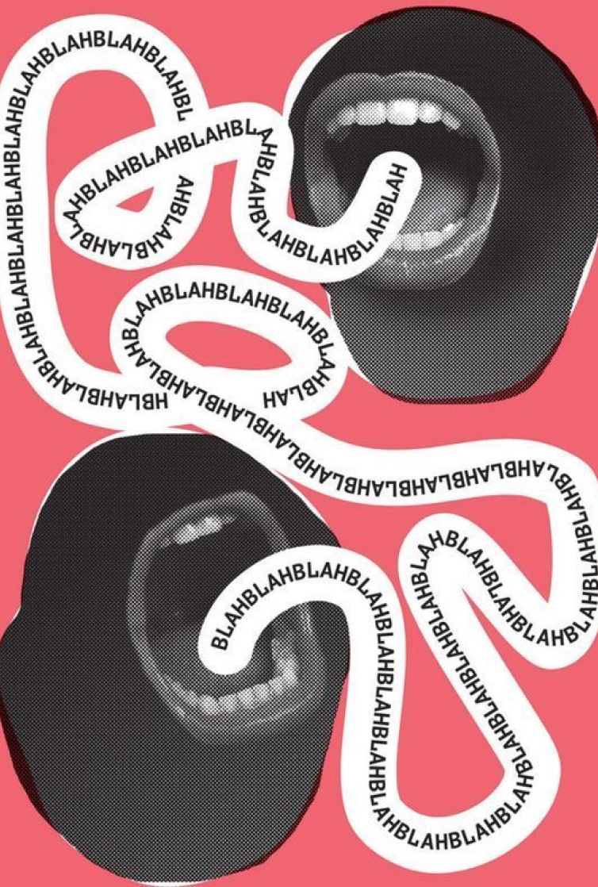

Descrizione della mostra
Inaugurazione
La mostra "Visioni Illustrate: Viaggio nell'Illustrazione Contemporanea" inaugurerà il primo maggio alle 18:00, segnando l'inizio di un'esclusiva esposizione dedicata all'illustrazione contemporanea che promette di essere un punto di riferimento culturale per il mese a venire. Questo evento speciale offrirà agli appassionati d'arte, agli illustratori, ai designer e al pubblico generale l'opportunità di immergersi in un mondo dove la creatività non conosce confini. L'inaugurazione sarà non solo un'anteprima delle opere esposte, ma anche un'occasione per incontrare alcuni degli artisti partecipanti, condividere pensieri e discutere le diverse interpretazioni e ispirazioni dietro ogni pezzo.

Info mostra
Visioni Illustrate: Viaggio nell'Illustrazione Contemporanea è una mostra esclusiva che apre una finestra sul vibrante mondo dell'illustrazione contemporanea, portando alla luce le più innovative e suggestive espressioni artistiche di questo settore. Attraversando una varietà di stili, tecniche e temi, questa esposizione celebra la diversità e la ricchezza creativa degli illustratori contemporanei, offrendo ai visitatori un viaggio affascinante attraverso la loro visione del mondo.
La mostra presenta una collezione curata di opere che esplorano l'ampio spettro dell'illustrazione, dalla narrazione visiva alla sperimentazione artistica, dall'uso di tecniche tradizionali come l'acquerello e l'inchiostro, fino alle più avanzate applicazioni digitali. Gli artisti selezionati provengono da vari angoli del globo, ciascuno con la propria voce unica, in grado di trasportare lo spettatore in universi paralleli, paesaggi onirici e scenari caricati di emotività e introspezione.
Visioni Illustrate non è solo un'esposizione, ma un dialogo aperto tra gli artisti e il pubblico, una celebrazione del potere dell'illustrazione di raccontare storie, evocare emozioni e stimolare riflessioni. Le opere in mostra spaziano da quelle che affrontano tematiche attuali e socialmente rilevanti, a rappresentazioni che indagano il confine tra il reale e l'immaginario, dimostrando come l'illustrazione possa essere un potente strumento di commento sociale e allo stesso tempo di pura evasione estetica.
Curata con l'intento di ispirare e coinvolgere, la mostra è un invito a scoprire le infinite possibilità espressive dell'illustrazione contemporanea, promuovendo un apprezzamento più profondo per questa forma d'arte sempre in evoluzione. Visioni Illustrate è quindi un must per appassionati d'arte, illustratori, designer e chiunque sia interessato a esplorare le nuove frontiere dell'espressione creativa.